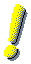

Pour les accros de science-fiction !!

Toutes les images présentées ici sont sous forme de petits icônes, pour faciliter la sélection.
Ça peut prendre un peu de temps à charger ...
Alien.
Star Wars.
Star Trek.
Page Maintenue par
Didier Verna
(verna@inf.enst.fr)
Dernière mise à jour: Fri Mar 7 10:12:47 MET 1997